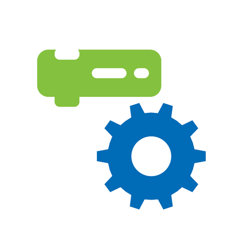

Προγραμματισμός με blocks για το hub του LEGO® Education WeDo 2.0. Σε tablet και υπολογιστή, χωρίς εγκατάσταση, χωρίς Scratch Link και χωρίς internet μέσα στην τάξη. Block coding for the LEGO® Education WeDo 2.0 hub. On tablets and computers, with nothing to install, no Scratch Link, and no internet needed in class.
Λειτουργεί με το LEGO® Education WeDo 2.0. Το HubBlocks δεν σχετίζεται με τον όμιλο LEGO και δεν έχει την έγκρισή του. Works with LEGO® Education WeDo 2.0. HubBlocks is not affiliated with, or endorsed by, the LEGO Group.

Σάρωσε με το tablet για να ανοίξει η εφαρμογήScan with a tablet to open the app
Ό,τι χρειάζεται μια τάξη, χωρίς τα συνηθισμένα εμπόδια.Everything a classroom needs, without the usual hurdles.
Το hub συνδέεται απευθείας από τον browser με Bluetooth. Τίποτα δεν εγκαθίσταται στον υπολογιστή.The hub connects straight from the browser over Bluetooth. Nothing to install on the computer.
Εγκατέστησέ το μία φορά ως εφαρμογή και ανοίγει από εικονίδιο, ακόμα και χωρίς σύνδεση.Install it once as an app and it opens from an icon, even with no connection.
Όλα τα blocks του hub στα ελληνικά, και ο editor σε όποια γλώσσα θέλεις.All hub blocks in Greek or English, and the editor in the language you choose.
Ο γνωστός editor με όλα τα blocks του Scratch, ήχους, sprites και αρχεία .sb3.The familiar editor with all Scratch blocks, sounds, sprites and .sb3 files.
Ισχύς 0–10, φορά, χρονισμός, και τα 11 χρώματα του φωτός του hub.Power 0–10, direction, timing, and the hub light's 11 colours.
Αισθητήρας απόστασης και κλίσης, με hat blocks «όταν…» για άμεση αντίδραση.Distance and tilt sensors, with "when…" hat blocks for instant reactions.
Μετονομασία των hub («Ομάδα 1, 2…»), αυτόματη επανασύνδεση, το κόκκινο stop σταματά τα μοτέρ.Rename hubs ("Team 1, 2…"), automatic reconnection, and the red stop sign stops the motors.
Χωρίς λογαριασμούς, χωρίς διαφημίσεις, χωρίς συλλογή δεδομένων.No accounts, no ads, no data collection.
Από το κουτί στο πρώτο πρόγραμμα σε λίγα λεπτά.From the box to the first program in a few minutes.
Τα πιο συνηθισμένα θέματα στην τάξη.The most common classroom issues.
Ο Chrome χρειάζεται την άδεια «Συσκευές κοντά» (Nearby devices) και ενεργή Τοποθεσία. Ρυθμίσεις → Εφαρμογές → Chrome → Άδειες.Chrome needs the "Nearby devices" permission and Location turned on. Settings → Apps → Chrome → Permissions.
Χρησιμοποίησε μία φορά το block «μετονόμασε το hub σε…» με όνομα όπως «Omada 1». Μετά από επανεκκίνηση του hub, αυτό το όνομα εμφανίζεται στη λίστα σύνδεσης. Προτίμησε λατινικούς χαρακτήρες και σύντομα ονόματα.Use the "rename hub to…" block once with a name like "Team 1". After restarting the hub, that name appears in the connection list. Prefer short names in Latin letters.
Το hub δεν έχει ηχείο. Οι ήχοι παίζουν από τον υπολογιστή ή το tablet, με την κατηγορία «Ήχος» ή την επέκταση «Μουσική» — όπως και στην επίσημη εφαρμογή.The hub has no speaker. Sounds play from the computer or tablet, using the "Sound" category or the "Music" extension — as in the official app.
Ο αισθητήρας κλίσης δίνει έναν αριθμό για κάθε κατεύθυνση:The tilt sensor reports a number for each direction:
| 0 | καμία κλίσηno tilt |
| 3 | κάτω (προς τα πίσω)down (backward) |
| 5 | δεξιάright |
| 7 | αριστεράleft |
| 9 | πάνω (προς τα μπρος)up (forward) |
Όχι σε κάποιον server. Τα projects μένουν στη συσκευή και αποθηκεύονται ως αρχεία .sb3 με «Αρχείο → Αποθήκευση στον υπολογιστή σου». Δες την πολιτική απορρήτου.Not on any server. Projects stay on the device and are saved as .sb3 files with "File → Save to your computer". See the privacy policy.
Όχι. Το HubBlocks είναι ανεξάρτητο, δωρεάν εργαλείο ανοιχτού κώδικα που συνεργάζεται με το hub του WeDo 2.0. Δεν σχετίζεται με τον όμιλο LEGO.No. HubBlocks is an independent, free, open-source tool that works with the WeDo 2.0 hub. It is not affiliated with the LEGO Group.
Γράψε το στα Issues του GitHub — κάθε σχόλιο από την τάξη βοηθά.Post it in the GitHub Issues — every classroom report helps.